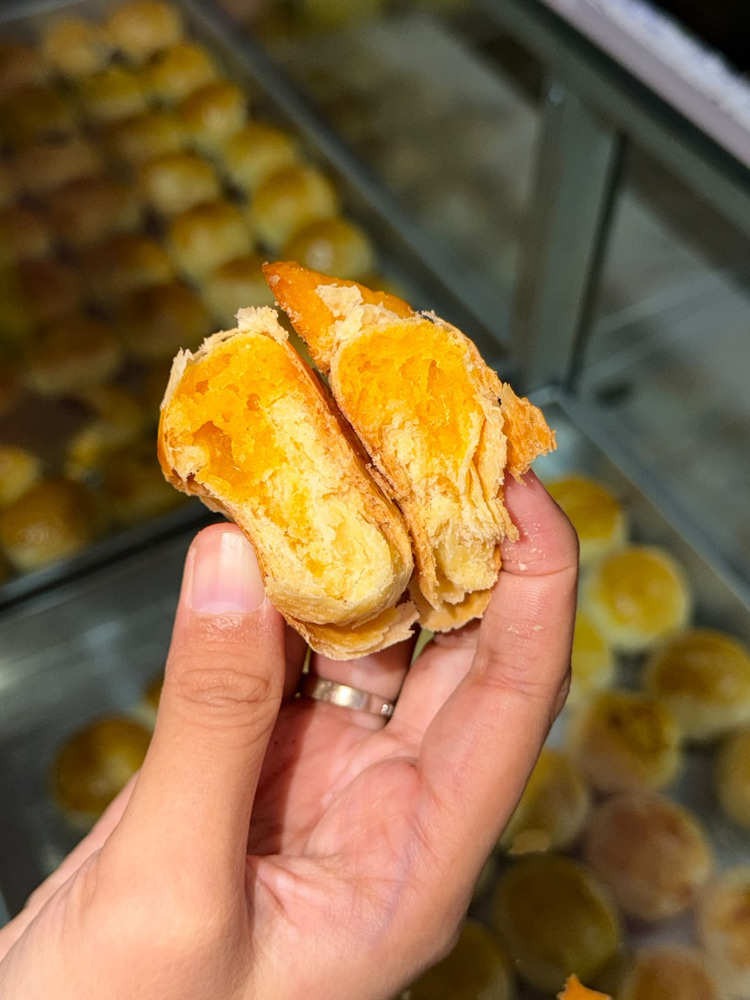
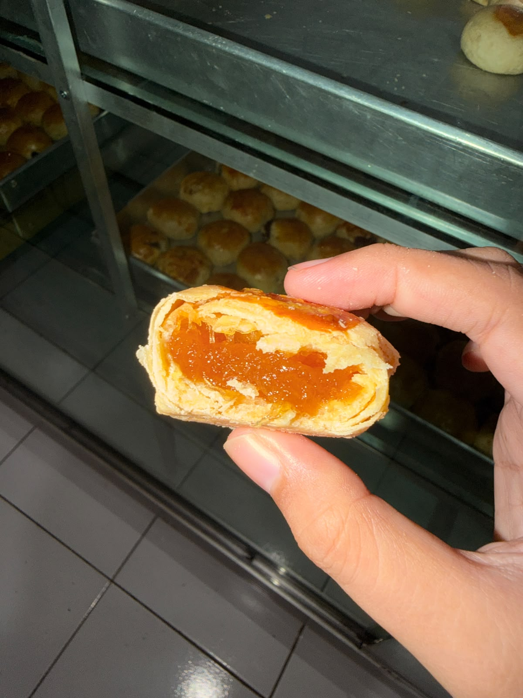
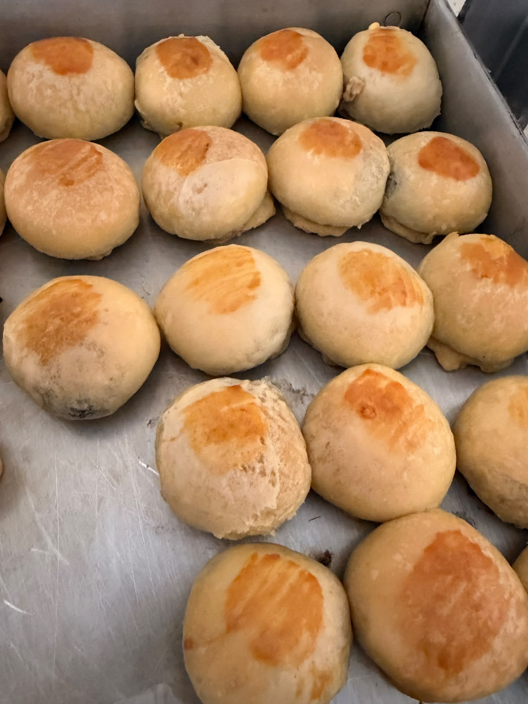
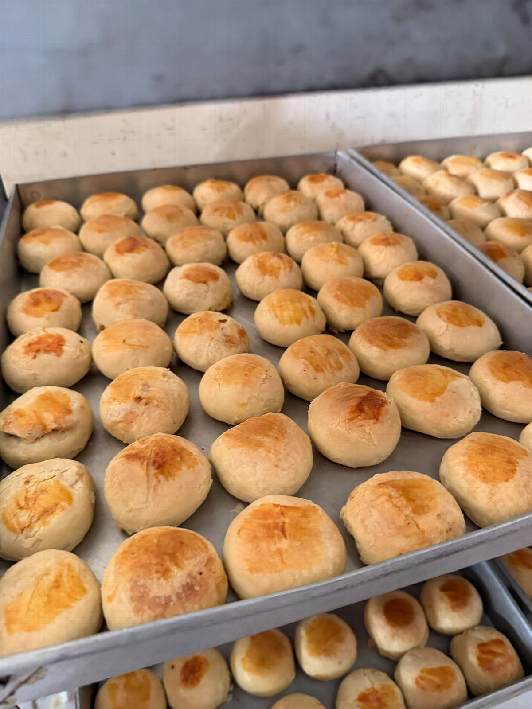
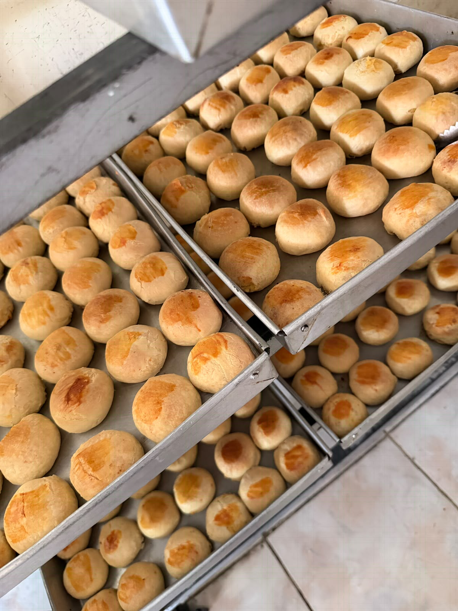

LEZATNYA LUMER,
RENYAHNYA JUARA!
Pia panggang dengan isian padat melimpah & kulit berlapis super renyah. Freshly baked setiap hari di Mojoagung.

FROM THE
OVEN
ASLI &
RENYAH
Kenapa Harus Pia RB Mojoagung?
Isian Padat & Lumer
Isian melimpah dengan rasa manis legit yang pas dan tekstur lembut di setiap gigitan tanpa bikin seret.
Kulit Berlapis Super Renyah
Kulit pastry berlapis tipis yang renyah di luar namun tetap lembut menyatu sempurna dengan isiannya.
Selalu Baru & Hangat
Dipanggang segar setiap hari sehingga aroma, kerenyahan, dan kualitas rasanya selalu terjaga hingga ke tangan Anda.
Produk Kami




TERSEDIA DI APLIKASI
Lokasi & Kontak
Kunjungi langsung outlet kami di Mojoagung atau hubungi kami melalui WhatsApp dan sosial media resmi.
Pia RB Mojoagung
Alamat
Jl. A. Yani 110, Mojolegi, Mojoagung, Jombang
Mojolegi, Kecamatan Mojoagung, Kabupaten Jombang, Jawa Timur.